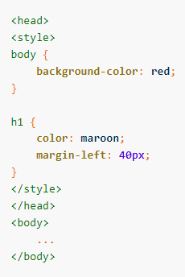
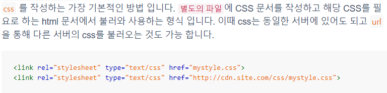

CSS 기본문법
CSS는 선택자와 선언부로 구성됩니다. 선택자는 스타일을 지정할 HTML
요소(태그,아이디 등)를 가리킵니다. 선언부에는 CSS 속성 이름과 값이
포함됩니다. 속성이 여러 개일 경우, 한 줄로 나열해도 상관없지만 여러 줄에
걸쳐 작성하는 것이 좋습니다.
선택자 {속성:값; 속성:값....}
예) h1 {color:red; font-size:15px;}
h1/*h1태그의 색상을 빨간색으로 크기는 15px로 지정합니다.*/
스타일의 종류
내부스타일, 외부스타일, 인라인스타일
내부스타일

외부스타일
